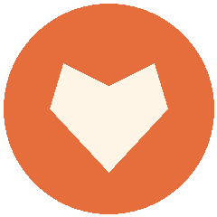

Pular para o conteúdo

Instituto Mãos Solidárias
Início
Projetos
Nossos projetos
Seja voluntário
Faça uma doação
Cadastro
Cadastrados
0
Este site precisa de JavaScript para funcionar. Ative o JavaScript no seu navegador.